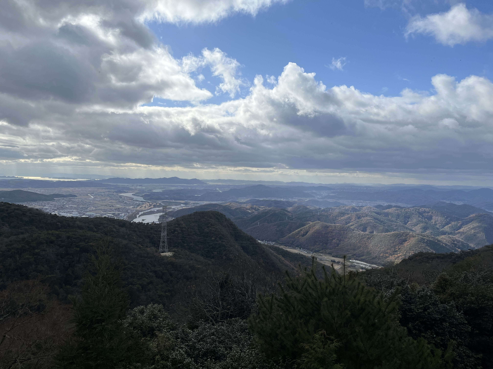

Popular Eco Hiking Spots

Mount Kuma

Mount Nagi

🥾 Hiking Trail
🧑🤝🧑 Youth Travelers
Location: Akaiwa, Okayama
Height: 508 meters
Difficulty: Easy to Medium
Mount Kumayama (熊山, Kumayama) is a sacred mountain in Akaiwa, Okayama Prefecture.
Mount Kumayama (熊山, Kumayama) is a sacred and historically significant mountain in Akaiwa, Okayama Prefecture, rising to about 508 meters above sea level.
🪨 Ancient and Religious Significance
Mount Kumayama has been regarded as a holy mountain since ancient times. On its summit is a mysterious stone structure known as the Kumayama ruins (熊山遺跡), which resembles a three-tiered stepped platform — sometimes likened to a miniature pyramid — and is a designated National Historic Site of Japan.
Archaeological evidence suggests that the main stone structure was built in the early Nara period (710–794 AD) atop an even older sacred rock site (iwakura), where religious practices may have occurred since the Yayoi period (before 300 BC).
This stone platform is composed of stacked granite blocks forming a stepped base and three tiers. Square niches on each side of the second tier likely held Buddhist statues or objects. A ceramic container once found inside — now kept at Tenri University — contained a leather scroll, though its contents were lost in 1937.
While the exact origin and purpose remain debated, some scholars compare the structure to early Buddhist stupas (such as the Zutō in Nara and Dotō in Osaka), and local legend even attributes its construction to the Chinese monk Ganjin, famed for introducing Buddhism to Japan.
🛕 Temple and Religious Traditions
Historical records also indicate that a temple named Ryōzen‑ji once existed near the ruins and claimed ties to Ganjin’s traditions. Remains of foundations related to temple buildings and other stone structures have been found on the slopes of Kumayama, indicating a broader religious complex that thrived through early Japanese history.
Today, traces of ancient spiritual practice and Buddhist history remain at Mount Kumayama, making it both a destination for hikers and a place of cultural and historical interest.
Location: Okayama
Height: 1,212 meters
Difficulty: Medium
Mount Nagi (那岐山 / Nagisan) is a scenic mountain on the border of Okayama and Tottori Prefectures.
Mount Nagi (那岐山 / Nagisan) is a mountain at the border of Nagi in Okayama Prefecture and Chizu in Tottori Prefecture in Japan. It rises to about 1,255 meters and is one of the prominent peaks in the Chūgoku Mountains region.
🌿 Nature & Geography
Mt. Nagi is part of the Hyōnosen‑Ushiroyama‑Nagisan Quasi‑National Park, a protected area known for its rich natural environment.
It offers a 360° panoramic view from the summit — on clear days you can see far across Okayama, Tottori, and even toward the Sea of Japan and Shikoku.
The mountain displays beautiful seasonal scenery — from fresh greens in spring to vivid autumn foliage and snow‑capped winter landscapes.
📜 Legends & Name Origin
There are two interesting stories behind the name Nagi:
Mythological Origin
The name is sometimes linked to the Japanese deities Izanagi no Mikoto and Izanami no Mikoto, who are said in legend to have descended to this mountain.
“Mountain That Cried” Story
Another explanation comes from wordplay on naku (泣く, “to cry”). It’s said that the mountain “cried” because it was lower in height than nearby Mount Ushiro.
These stories reflect both mythical tradition and local wordplay, tying cultural meaning to the landscape.
🥾 Hiking & Cultural Use
Mt. Nagi has multiple climbing routes from Nagi town, offering choices for beginners and intermediate hikers alike.
A full climb and descent typically takes about 3.5–4.5 hours for most hikers, with some routes involving scenic ridges and side trails.
Rocks and formations around the mountain historically served as a center for Shugendō, a traditional Japanese mountain ascetic practice blending Shinto and Buddhist beliefs.
Location: Okayama
Height: 1,205 meters
Difficulty: Easy to Medium
Mount Hiruzen (蒜山) is a popular highland area with scenic views and rich cultural history.
Mount Hiruzen (蒜山) refers to both a mountain area and the Hiruzen Highlands in northern Maniwa City, Okayama Prefecture, near the border with Tottori Prefecture. It’s part of the Chūgoku Mountains and an important natural and cultural region in western Japan .
📜 Ancient Settlement
People lived in the Hiruzen area since prehistoric times. Archaeological remains from the Jōmon period (around 14,000–300 BCE) have been found in the Hiruzen Basin, showing long-term human settlement .
During later periods, such as the Yayoi period (300 BCE–250 CE) and the Kofun period (around the 5th century), the region was increasingly populated. Burial mounds (kofun) from the 6th century can still be seen near Hiruzen, and artifacts from these sites are exhibited in local museums .
🌋 Volcanic Formation
Mount Hiruzen is part of a volcanic belt associated with Mt. Daisen. Its “three peaks” — Mt. Kamihiruzen, Mt. Nakahiruzen, and Mt. Shimohiruzen — were formed by volcanic activity hundreds of thousands of years ago. The volcanic soil and landscape shaped the ecology and human use of the region .
A large lake once existed where the Hiruzen Plateau now lies, created when volcanic debris blocked a river 350,000 years ago. Over time that lake dried up and became fertile land, where people later established settlements .
🌾 Cultural and Agricultural History
For many centuries, the people who lived around Hiruzen developed ways to live with the environment. Controlled burns called yamayaki were used to manage grasslands — promoting new grass for livestock and maintaining the open highland landscape. This practice helped support traditional grazing and agricultural lifestyles and remains a cultural tradition today .
In more recent history, the Hiruzen Highlands became known for:
Jersey cows and dairy products, after cattle were introduced in the 1950s
Resort and tourism development, as the highlands became a popular destination for hiking, cycling, camping, and skiing
Local crafts and traditional dance (Ōmiya Odori), part of the cultural heritage of the area
🏞️ Cultural Landscape
The Hiruzen Highlands are known for their grasslands, seasonal wildflowers, and scenic views of the Three Peaks. The natural environment and human culture are deeply connected — people historically depended on local plant and animal life, and these traditions continue in community festivals and practices that reflect centuries of coexistence with nature .
Today, local museums in Hiruzen preserve and showcase this rich history, including ancient artifacts and exhibits on traditional agriculture, crafts, and local culture .
Distance: 0 km
Estimated Hiking Time: 0 hours